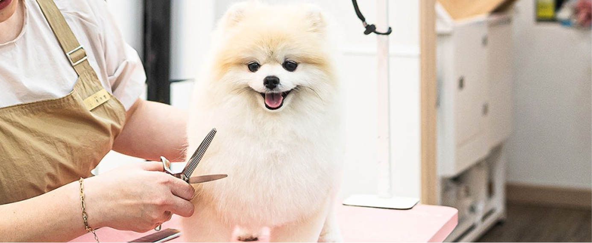
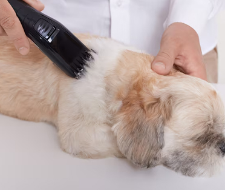
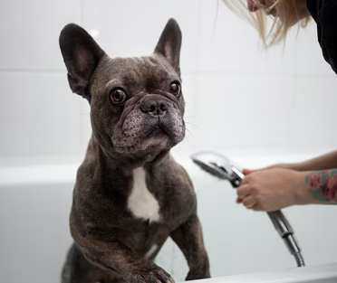
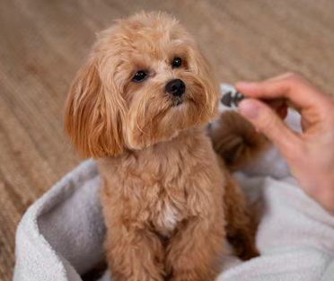

미용 및 케어 서비스
미용은 외적인 변화보다 아이의 컨디션을 세심하게 살피며 일상을 정돈하는 과정에 집중합니다.
과한 자극을 줄이기 위해 정해진 방식보다는 아이가 수용할 수 있는 범위 내에서 차분하게 관리를 진행합니다.
낯선 환경에서도 아이가 심리적 안정을 유지하며 편안하게 머무를 수 있는 배려 깊은 케어를 지향합니다.

위생과 안정을 위한 미용·케어
미용과 케어는 외형을 위한 과정이 아니라, 아이의 위생 상태를 점검하고 몸에 쌓인 불편함을 덜어내는 기본적인 돌봄입니다. 새로운 환경에 적응하는 시기에는 작은 자극에도 예민해질 수 있기 때문에, 아이의 상태를 살피며 무리 없는 범위에서 케어를 진행합니다.

아이와 상태에 맞춘 기본 케어
모든 아이에게 같은 방식의 미용을 적용하지 않습니다. 피부 상태, 털의 길이와 엉킴, 성격과 반응을 고려해 필요한 부분만 최소한으로 관리하며, 아이가 과도한 스트레스를 받지 않도록 합니다. 낯선 접촉에 대한 부담을 줄이는 것을 가장 중요하게 생각합니다.

‘관리’보다 ‘돌봄’에 가까운 미용
저희가 제공하는 미용·케어 서비스는 정해진 스타일을 만드는 것이 아니라, 아이가 편안하게 일상을 이어갈 수 있도록 돕는 과정입니다. 입양 이후의 생활을 고려해, 보호자에게도 일상 속에서 참고할 수 있는 관리 방향을 함께 안내합니다.
